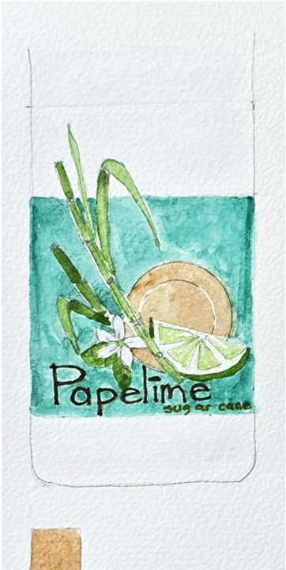

By the numbers 350 people · 6 months
Before bottling the first product, we asked Northern Virginia what it wanted to drink — a survey across Falls Church, Springfield, Alexandria, and Arlington over six months.
What people want when they're thirsty.
What do you prefer to drink when thirsty?
Papelime leads ahead of tea, soda, and juice.
Which is your favorite flavor?
Lime wins by a wide margin — the recipe was waiting.
A market that wants recyclable.
Which presentation do you prefer?
53% chose recyclable packaging — not a coincidence.
Preference by age & gender
A young, balanced audience — primarily 18–39 years old.
- 18–39 yr52%
- 39–45 yr28%
- 45–50 yr18%
- 15–18 yr2%
- Male48%
- Female52%
Aiming for second place.
Current category leaders in Northern Virginia. Papelime targets the #2 position — the slice held today by ice tea.
- Coca-Cola25%
- Ice Tea ← Papelime target22%
- Sprite20%
- Orange Juice18%
- Water15%
From 80 units in February to 1,050 by December.
Year-one monthly projection. A steady climb as distribution expands across the four founding cities.
What people actually said.
How Papelime is built.
A lean structure designed to scale from neighborhood operation to regional brand.
SWOT — honest read.
What we own.
- Organic, single-recipe product.
- Prices that don't depend on foreign supply chains.
- Marketing channels close to the consumer.
- Innovative natural product in a soda-heavy market.
What we work on.
- Perishable — cold chain required.
- Competitor products are deeply known.
- Beverage legal regulations to navigate.
What's open.
- Access to credit lines for growth.
- Strategic alliances with local retail.
- Market with scarcity and high prices in alternatives.
- Ecologist (green) consumer trend on the rise.
What we watch.
- Economic slowdown affecting discretionary spend.
- Acquisition of raw material at stable price.
- Packaging shortage from suppliers.
Where Papelime lands.
Supermarkets
Grocery aisles and neighborhood markets across Northern Virginia. Cold case, beverage row.
Kiosks
Street kiosks, plaza stands, and event vendors — quick refreshment on the move.
Warehouses
Corner stores, bodegas, and family-run shops — the everyday stops where Papelime fits in.
You cannot get through a single day without having an impact on the world around you. What you do makes a difference, and you have to decide what kind of difference you want to make.
Jane Goodall · Primatologist & Conservationist
Want the full deck?
Mayoristas, prensa y alianzas — we share the full market study by request.
Contact us